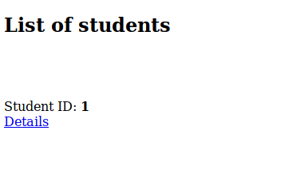
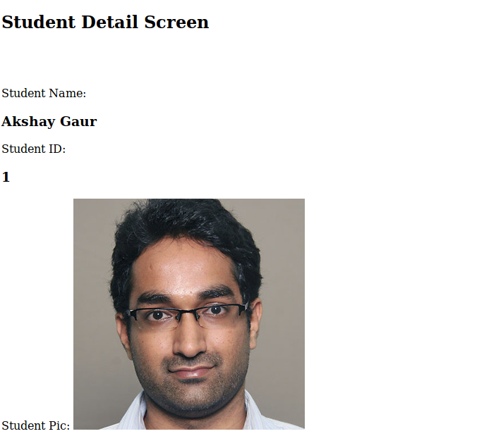

For that, we will use our student model where we stored student's pic as a model attribute. To start, let us first make a list view to show the list of students in our system. So open up your views.py and add the following:
# import models
from students.models import Department, Student
class StudentListView(ListView):
"""
Return list of students in the system.
"""
template_name = 'stud-list.html'
model = Student
context_object_name = 'students'And, create the template named 'stud-list.html' in the templates folder:
<!doctype html>
<html lang="en">
<head>
<meta charset="UTF-8">
<title>Student List</title>
</head>
<body>
<h2>List of students</h2>
<br><br><br>
{% for student in students %}
Student ID: <b>{{ student.s_id }}</b><br>
{% endfor %}
</body>
</html>Add the url in student/urls.py file like so:
from django.urls import path
from students import views
urlpatterns = [
path('', views.WelcomeView.as_view(), name='welcome'),
path('depts/', views.DeptListView.as_view(), name='dept_list'),
path('depts/<str:pk>/details/', views.DeptDetailView.as_view(), name='dept_details'),
path('students/', views.StudentListView.as_view(), name='stud_list'),
]If we go to the url 127.0.0.1:8000/students/ we should see the following:
Now, if you try to add a link to go to the student's detail like we did in the case of Department list view right now (when we have neither defined a student's detail view nor its url) you will get an error.
So, let us create the student's detail view and corresponding template and the url. Then we will come back here and add the link to the student's details.
Let us first create the student's details view in students/views.py:
class StudentDetailView(DetailView):
"""
This class utilizes the default class
based view provided by Django framework to
display the details of a student in the system
"""
template_name = 'stud-details.html'
model = Student
context_object_name = 'student'Now, add the stud-details.html in the templates folder and type in it the following basic html:
<!doctype html>
<html lang="en">
<head>
<meta charset="UTF-8">
<title>Student details</title>
</head>
<body>
<h2>Student Detail Screen</h2>
<br><br><br>
Student Name: <h3>{{ student }}</h3>
Student ID: <h3>{{ student.s_id }}</h3>
Student Pic: <img src="{{ student.s_pic }}">
</body>
</html>Notice how we used the student object's picture attribute to define the source of the image in an <img> tag.
Finally, add the url to this view in the students/urls.py file:
from django.urls import path
from students import views
urlpatterns = [
path('', views.WelcomeView.as_view(), name='welcome'),
path('depts/', views.DeptListView.as_view(), name='dept_list'),
path('depts/<str:pk>/details/', views.DeptDetailView.as_view(), name='dept_details'),
path('students/', views.StudentListView.as_view(), name='stud_list'),
path('students/<int:pk>/details/', views.StudentDetailView.as_view(), name='stud_details'),
]Now, coming back to the templates/stud-list.html, we can finally add to it the link to details of the student:
<!doctype html>
<html lang="en">
<head>
<meta charset="UTF-8">
<title>Student List</title>
</head>
<body>
<h2>List of students</h2>
<br><br><br>
{% for student in students %}
Student ID: <b>{{ student.s_id }}</b><br>
<a href="{% url 'stud_details' pk=student.pk %}"> Details </a><br>
{% endfor %}
</body>
</html>If you go to 127.0.0.0:8000/students/ again, you should see the page displayed with the link to see the details of the student:

And upon clicking the link, you should see the details as:
But wait... what????? Where is my picture???
That is because the image source that we defined is incomplete and the browser wasn't able to load the picture:
So, what do we do? Well, Django framework gives us a handy 'url' attribute to get the absolute url of the image using the MEDIA_ROOT attribute that we had declared previously in tutorial/settings.py file.
To fix this issue, replace
<img src="{{ student.s_pic }}">with:
<img src="{{ student.s_pic.url }}">in students/template/stud-details.html and try to reload the page:
Again?? Where the hell is my pic dude??
This is because we are in a development environment and need absolute path to the image in order to process them correctly. To do this, go to the tutorial/urls.py file and add the following lines of code:
from django.contrib import admin
from django.urls import path, include
# IMPORT THIS
from django.conf import settings
from django.conf.urls.static import static
urlpatterns = [
path('admin/', admin.site.urls),
path('', include('students.urls')),
]
# ADD THIS
if settings.DEBUG:
urlpatterns += static(settings.MEDIA_URL, document_root=settings.MEDIA_ROOT)Now try to load student details page again:

Voila!!!
Okay, lets move on to the next bit, Adding and Updating instances of models using Forms.